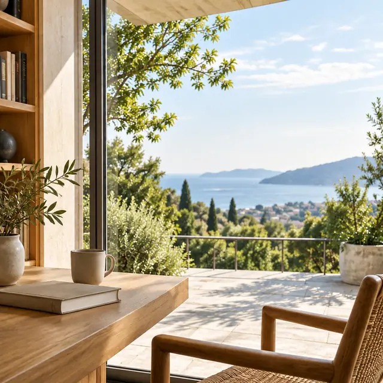

事業家から投資家・資本家へ移るタイミング
事業を育ててきた経営者が、これからも同じ役割を続けるとは限りません。仕事への関わり方を変えるときに大切なのは、肩書きや資産額だけで区切らず、自分と家族がどのような時間を過ごしたいかを一緒に考えることです。
LATEST ARTICLES
事業を育ててきた経営者が、これからも同じ役割を続けるとは限りません。仕事への関わり方を変えるときに大切なのは、肩書きや資産額だけで区切らず、自分と家族がどのような時間を過ごしたいかを一緒に考えることです。

海外に資産を持つという話は、運用先を増やすことだけで語られがちです。しかし経営者にとっては、将来の居住地、事業の拠点、家族の教育などともつながります。まず考えたいのは、海外を生活の中でどう位置づけるかという問いです。

会社の成長に力を注いできた経営者ほど、会社のお金と自分の人生設計を同時に考える機会が少ないことがあります。ただし、法人の資産と個人の資産は別のものです。ここでは具体的な資金移動の方法ではなく、検討を始めるための視点を整理します。

長い年月をかけて会社を育てた結果、自社との関わりが資産の中でも大きな位置を占めることがあります。それは経営者の歩みと深く結びついた状態です。大切なのは、良い悪いを先に決めることではなく、現在の全体像と人生の予定を確かめることです。
子どもの海外教育を考えると、学校選びだけでなく家族の暮らしや仕事にも話が広がります。費用の準備も含めて全体を見渡すことで、選択肢を丁寧に比べやすくなります。教育を資産形成の手段とせず、子どもと家族の希望から考えることが出発点です。

ファミリーオフィスという言葉から、特別な資産規模や年齢を思い浮かべる方もいるかもしれません。ここで考えたいのは名称を持つことではなく、事業、資産、家族の判断を全体として見渡す必要があるかということです。年齢だけでは答えは決まりません。

資産を整理しようとして、まず残高や評価額の一覧を作ることは自然な一歩です。ただ、その数字を何の判断に使いたいのかが曖昧なままだと、一覧ができても次の行動につながりません。最初に整理の目的を確認すると、集める情報にも意味が生まれます。
仕事の拠点と生活の拠点を考えることは、住所を決めることだけではありません。誰と過ごし、何に時間を使い、事業にどう関わるのかという選択でもあります。理想の場所のイメージを、実際の日常に置き換えて考えてみることが大切です。
事業の計画と家族の将来は、別々の場で話されることが多いものです。しかし経営者の時間や意思決定を通じて、二つは深く結びついています。どちらかを優先して片方を後回しにする前に、同じ視点から全体を眺める時間を持ってみます。